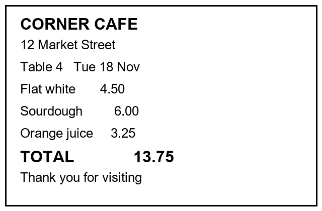

Draft translation: please check it with a native speaker before release.
Esta página es parte de la demostración de OCR. Estado: MVP.
Aquí hay una foto de un recibo. NoteCraft lee cada línea y guarda el texto junto a la imagen. Busca un precio o un artículo y se encuentra la página con este recibo.

El texto se obtiene de la imagen. Si la imagen cambia, el texto se vuelve a leer; si no cambia, no se lee nada.